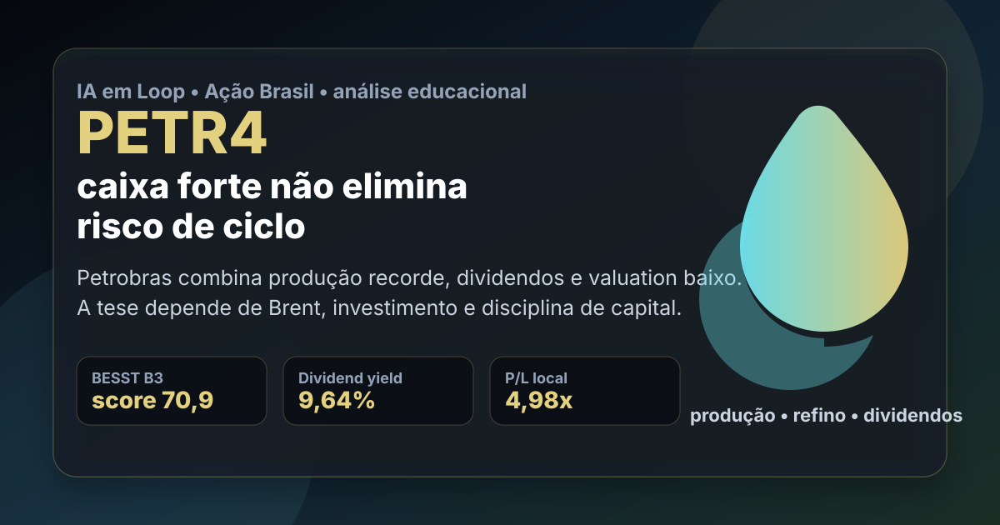

18/09: PETR4, Petrobras e o teste entre caixa, dividendos e Brent
Petrobras aparece forte nas duas lentes quantitativas brasileiras: alta pontuação no BESST Buffett B3 e posição relevante na Magic Formula. A pergunta central é direta: PETR4 está barata por geração de caixa ou barata porque o ciclo de petróleo cobra desconto permanente?

PETR4 combina lucro elevado, dividendos e múltiplos baixos. O ponto crítico é separar caixa recorrente de pico de commodity.
Resposta curta: caixa forte, risco também forte
Na base local do ranking BESST Buffett B3, PETR4 aparece com preço-base de R$ 40,47, valor de mercado de aproximadamente R$ 552,96 bilhões, dividend yield de 9,64%, P/VPA de 1,17, P/L de 4,98, 20 anos listados, 19 anos com dividendos e score 70,9. Na leitura Magic Formula filtrada, PETR4 também aparece bem posicionada, com ROIC de 17,85%, earnings yield de 25,25% e rank final #6.
Esses números explicam por que a ação chama atenção em uma carteira brasileira: lucro alto, dividendos relevantes, histórico longo e preço ainda baixo quando comparado ao lucro corrente. Mas Petrobras não é uma tese de renda simples. O lucro depende de Brent, câmbio, produção, refino, política de preços, investimento pesado e decisões de capital controladas por uma estatal listada.
O que o resultado recente muda na análise
O 2º trimestre de 2026 foi muito forte. A Petrobras reportou lucro líquido de R$ 52,4 bilhões, EBITDA ajustado de R$ 93,8 bilhões e fluxo de caixa operacional de R$ 61,8 bilhões. A companhia também citou produção operada recorde de petróleo no Brasil, em 2,7 milhões de barris por dia, e fator de utilização das refinarias de 101%.
O mesmo comunicado informou aprovação de R$ 17,4 bilhões em dividendos e juros sobre capital próprio no período. Isso sustenta a leitura positiva de caixa e remuneração ao acionista, mas não elimina o teste principal: quanto desse resultado é ciclo favorável de petróleo e quanto é eficiência estrutural que sobreviveria a Brent mais fraco?
| Métrica | Valor | Leitura |
|---|---|---|
| BESST Buffett B3 | score 70,9 | qualidade/renda com bom histórico |
| Magic Formula | rank #6 | retorno sobre capital e lucro/preço atrativos |
| Lucro líquido 2T26 | R$ 52,4 bi | trimestre excepcional |
| EBITDA ajustado 2T26 | R$ 93,8 bi | geração operacional elevada |
| Dividendos/JCP aprovados | R$ 17,4 bi | renda relevante, mas cíclica |
Por que Petrobras importa para uma carteira brasileira
Petrobras é uma das grandes âncoras de lucro da bolsa brasileira. Quando a empresa gera caixa, ela pode pagar dividendos elevados e influenciar o retorno de muitos índices e carteiras de valor. Por isso, PETR4 não é apenas uma ação de petróleo; é uma peça que mexe com renda, fiscal, câmbio, balança comercial e percepção de risco Brasil.
A tese fica interessante quando o investidor exige margem de segurança, não quando assume que dividendos recentes vão se repetir automaticamente. O valuation baixo pode ser oportunidade se a produção, o refino e a disciplina de investimento continuarem fortes. Também pode ser armadilha se preço do petróleo, política de combustíveis ou capex comprimirem caixa livre.
PETR4 merece estar no radar porque combina ranking quantitativo, lucro corrente e dividendos. A decisão racional não é “comprar pelo dividendo”, e sim acompanhar se o caixa livre continua cobrindo investimento, dívida e remuneração ao acionista em cenários menos favoráveis de Brent.
O que favorece e o que ameaça a tese
Favoráveis
• Forte presença nas duas leituras quantitativas brasileiras.
• Geração de caixa operacional muito elevada no 2T26.
• Produção e refino com recordes operacionais recentes.
• Dividend yield local alto e longo histórico de pagamentos.
• Múltiplos baixos em relação ao lucro corrente.
Desfavoráveis
• Exposição direta ao Brent e ao câmbio.
• Forte necessidade de investimento em exploração e produção.
• Risco político e de controle estatal.
• Dividendos podem cair rápido em ciclo fraco.
• Valuation baixo pode refletir risco estrutural, não apenas desconto.
Checklist para acompanhar daqui em diante
| Ponto | O que monitorar | Se piorar |
|---|---|---|
| Brent e câmbio | preço do petróleo e dólar | lucro e dividendos ficam pressionados |
| Caixa livre | fluxo operacional menos investimentos | dividendos deixam de ser sustentáveis |
| Capex | ritmo de investimento em exploração e produção | retorno ao acionista perde prioridade |
| Política de preços | defasagem doméstica contra paridade internacional | margem de refino fica vulnerável |
| Dívida | dívida bruta e custo financeiro | risco aumenta mesmo com lucro alto |
Conclusão
A resposta para a pergunta do post é: PETR4 parece barata pelo caixa atual, mas o desconto só é oportunidade se a geração resistir fora do pico de ciclo. O ranking favorece a ação porque lucro, dividendos e histórico estão fortes; o risco é tratar uma petroleira estatal como se fosse renda fixa.
Na régua do IA em Loop, Petrobras é uma tese de disciplina: estudar quando o mercado paga pouco por caixa real, mas exigir teste de ciclo, política de capital e cenário de petróleo antes de transformar dividendo passado em expectativa permanente.